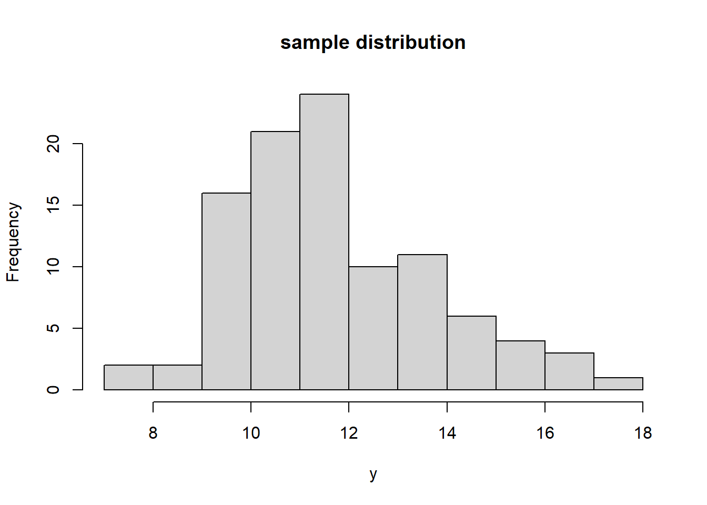
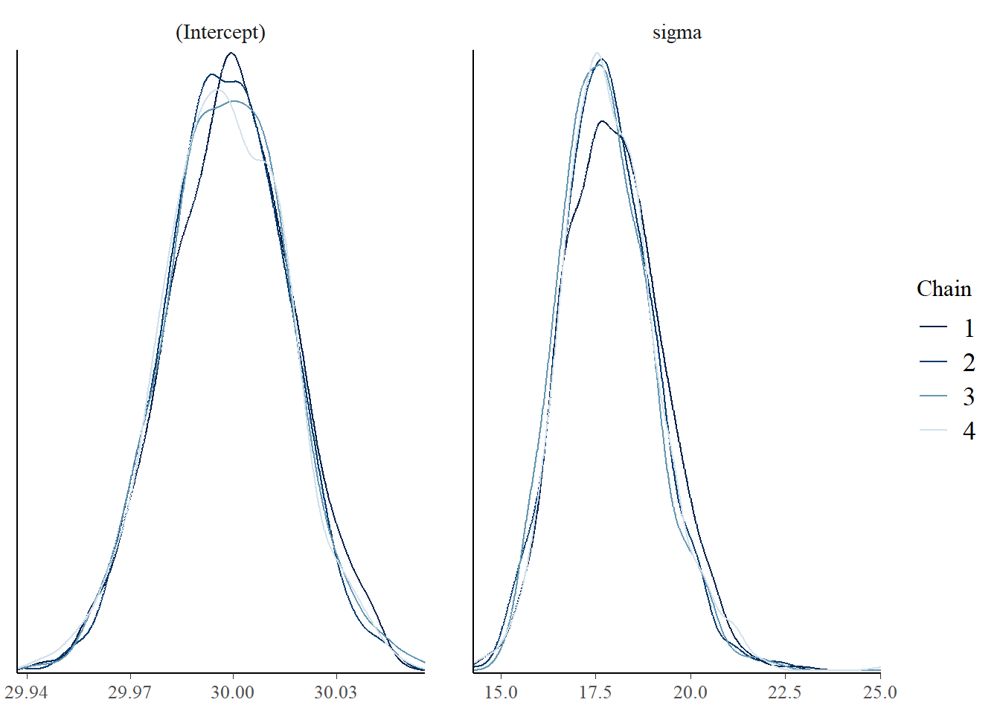
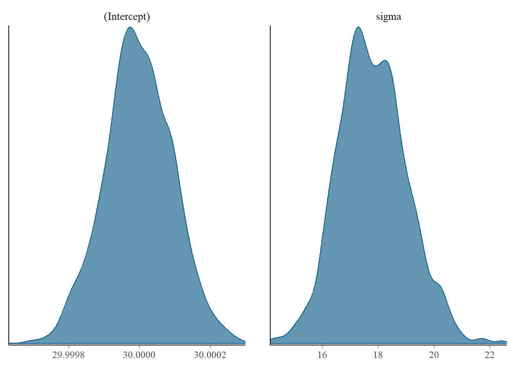
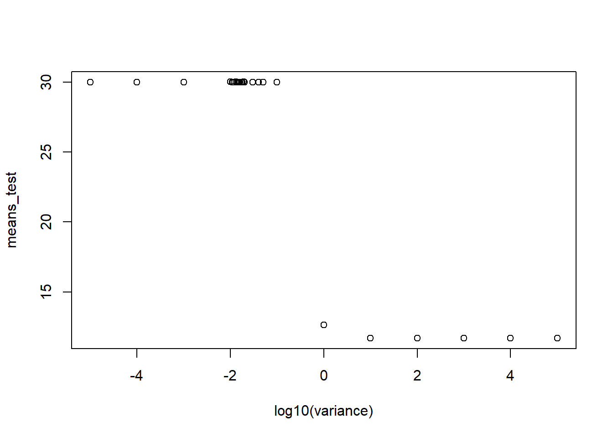
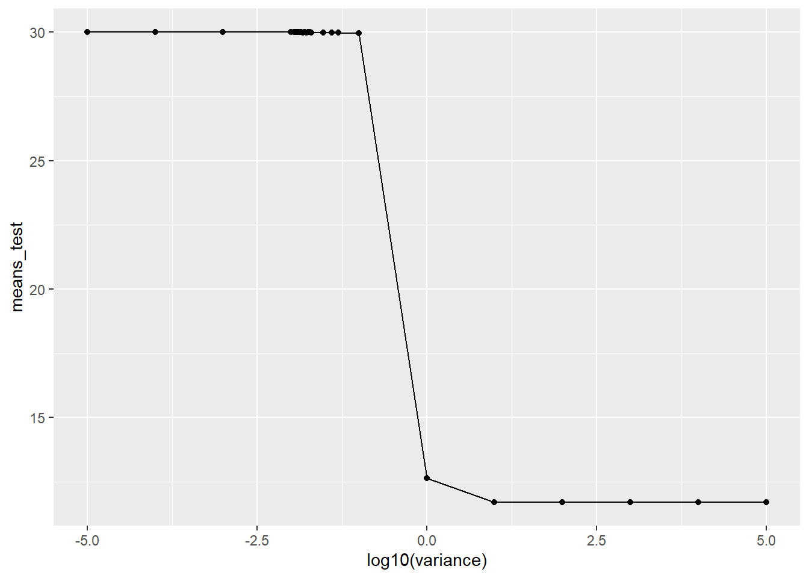
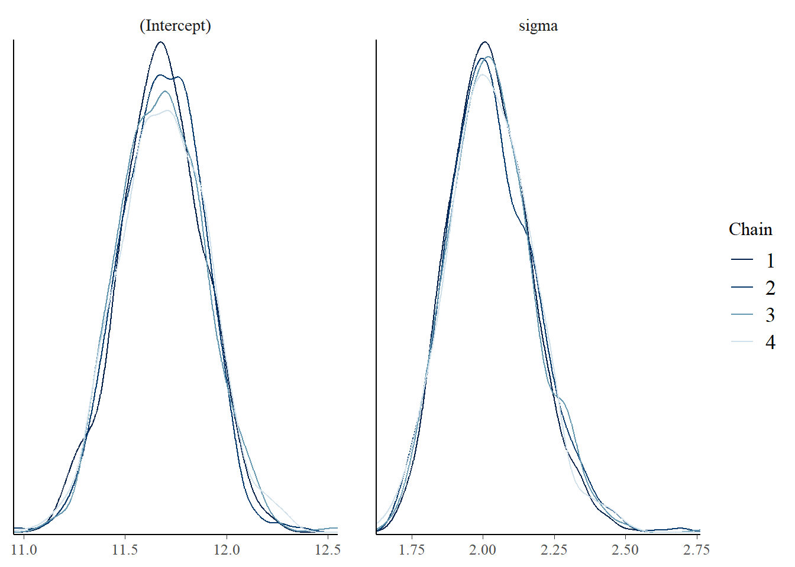
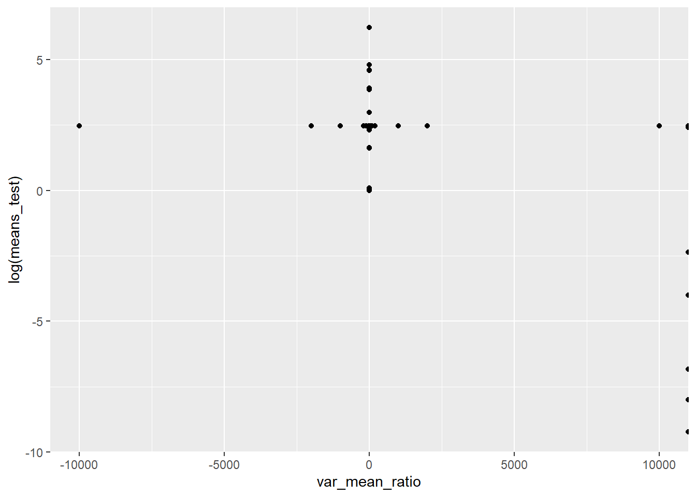
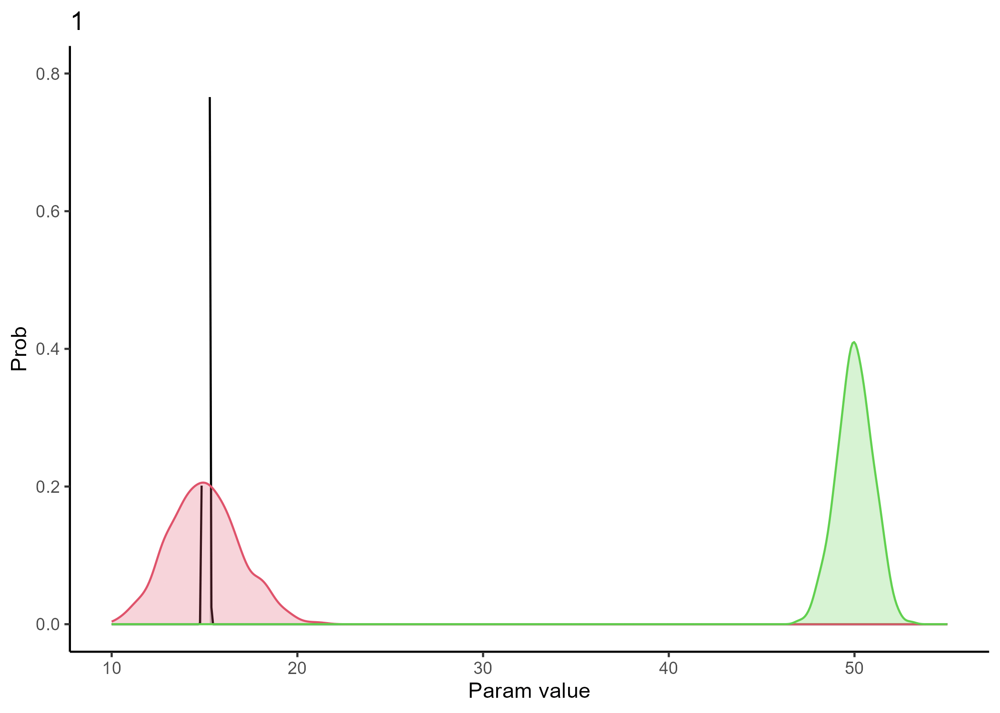
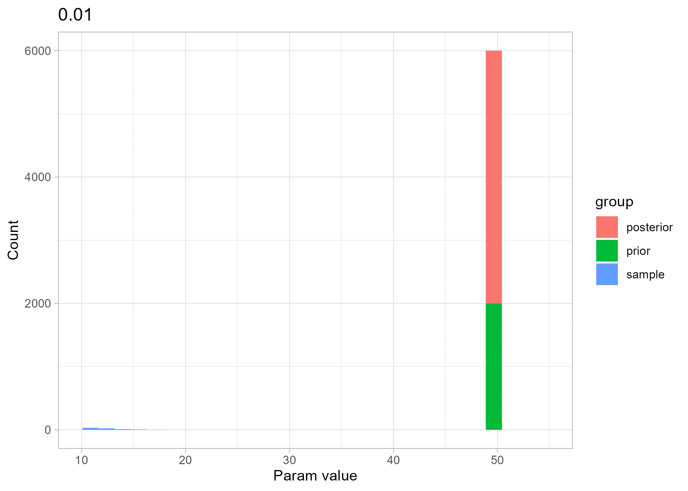
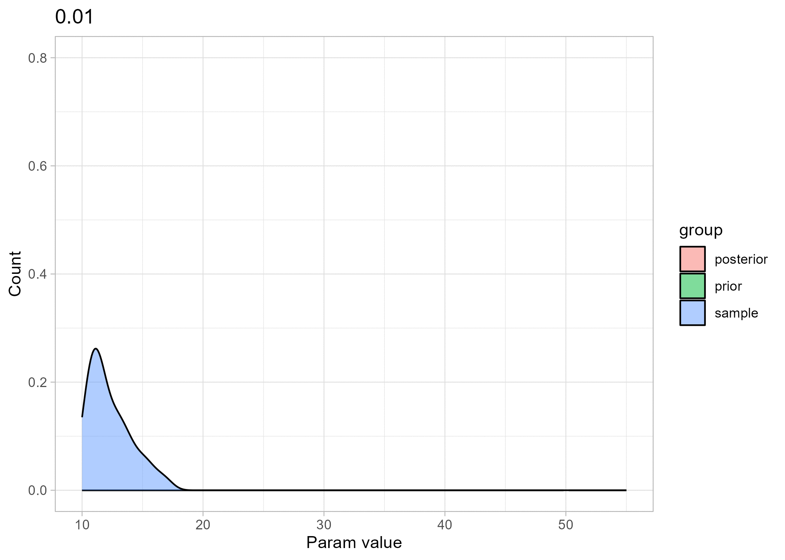

library(rstanarm)
library(ggplot2)
library(bayesplot)
library(blavaan)
library(dplyr)
library(magick)
library(ggplot2)
library(tidyverse)
library(ggridges)
library(dplyr)
library(tidyr)
library(rsvg)
theme_set(bayesplot::theme_default())
theme_set(theme_bw())2 Bayes filter - Variance influence
2.1 When does the prior start to influence the posterior too much?
For this analysis I chose a prior that is slightly closer to the population then in the previous section, for plotting purposes. The prior will be sharp enough to demonstrate the influence of the prior on the posterior.
Here I will keep the mean of the prior the same and change the precision (inverse variance). A list will be made with all the posterior distributions.
## create the sample (data)
set.seed(1234)
n <- 100
x0 <- rnorm(n, 12, 2)
b0 = 1
y = b0 * x0
df = data.frame(y, x0)
variance <- c(1E-5, 1E-4, 1E-3, 1E-2, 1E-1, 0.5E-1, 0.4E-1, 0.3E-1, 0.2E-1,0.19E-1,0.18E-1,0.17E-1,0.16E-1,0.15E-1,0.14E-1,0.13E-1,0.12E-1,0.11E-1,0.1111E-1,0.111111E-1, 1, 1E1, 1E2, 1E3, 1E4, 1E5)
# variance <- c(1E-2, 1E-1, 1, 2, 3, 4, 5, 7, 9, 10)
list_posterior_test <-list()
list_priors_test <- list()
count_i <- 0
for(i in variance){
count_i <- count_i +1
list_priors_test[count_i] <- as.array(rnorm(100, 30, i))
fit_test <- stan_glm(y ~ 1,
data = df,
prior_intercept = normal(c(30), i),
cores = parallel::detectCores(),
seed = 1234)
if(i == variance[1]){
list_posterior_test[1] <- as.array(fit_test)
}
else{
list_posterior_test[[length(list_posterior_test) + 1]] <- as.array(fit_test)
}
}
hist(y, main = 'sample distribution')
mcmc_dens_overlay(list_posterior_test[[11]])
mcmc_dens(list_posterior_test[[2]])
means_test <- array(NA, dim = length(variance))
for(j in 1:length(variance)){
if(j ==1){
means_test[j] <- mean(list_posterior_test[[j]])
}
else{
data_post <- mcmc_dens_chains_data(list_posterior_test[[j]])
data_post_sub <- subset(data_post, parameter == '(Intercept)')
means_test[j] <- mean(data_post_sub$x)
}
}
plot(log10(variance), means_test)
df_plots <- data.frame(means_test, variance)
ggplot(df_plots, aes(log10(variance), means_test))+
geom_point() +
geom_line()
We see here that a prior with a width of 1 and higher is uninformative enough in relation to the data that the model can still find the correct answer.
2.2 Look at the ratio of the location vs the width of the prior n = 500
start_time <- Sys.time()
variance <- c(1E-4, 1E-3, 1E-2, 1E-1, 0.5E-1, 0.11E-1, 1, 1.5, 1E1, 1E2, 1E3, 1E4)
mean_prior <- c(-10, -5, -1, 0, 1, 5, 10, 50, 100, 500 )
len <- length(variance)*length(mean_prior)
list_posterior_test <-list()
list_priors_test <- list()
var_mean_ratio <- array(NA, dim = len)
count_j <- 0
count_i <- 0
for(j in mean_prior){
count_j <- count_j+1
for(i in variance){
count_i <- count_i + 1
list_priors_test[count_i] <- as.array(rnorm(100, j, i))
fit_test <- stan_glm(y ~ 1,
data = df,
prior_intercept = normal(c(j), i),
cores = parallel::detectCores(),
seed = 1234)
if(i == variance[1]){
list_posterior_test[count_i] <- as.array(fit_test)
}
else{
list_posterior_test[[length(list_posterior_test) + 1]] <- as.array(fit_test)
}
var_mean_ratio[count_i] <- i/j
}
}
hist(y, main = 'sample distribution')mcmc_dens_overlay(list_posterior_test[[11]])
means_test <- array(NA, dim = len)
exception <- 0
for(k in 1:len){
if(k == 1 + exception*12){
exception <- exception + 1
means_test[k] <- as.array(mean(list_posterior_test[[k]]))
}
else{
data_post <- mcmc_dens_chains_data(list_posterior_test[[k]])
data_post_sub <- subset(data_post, parameter == '(Intercept)')
means_test[k] <- as.array(mean(data_post_sub$x))
}
}
#plot the ratio of the width/mean of prior vs means of posterior
df_plots_2 <- data.frame(means_test, variance, var_mean_ratio)
ggplot(df_plots_2, aes(var_mean_ratio, log(means_test))) +
geom_point() 
#+ # geom_line()
stop_time <- Sys.time()
(time_elapsed <- start_time - stop_time)Time difference of -24.91171 mins2.2.1 plotting the prior, posterior and data
## create the sample (data)
set.seed(1234)
n <- 1000
x0 <- rnorm(n, 15, 2)
b0 = 1
y = b0 * x0
df = data.frame(y, x0)
# Design the different priors -> in this case only the variance changes
variance <- c(seq(1,2,0.1), seq(2,5, 0.5), seq(5,10,1), seq(10,100,10))
# initialise the list for plotting the distributions later on
list_posterior_test <-list()
list_priors_test <- list()
#index
count_i <- 0
#fit the model and produce the posterior, save both posterior and corresponding prior
for(i in variance){
count_i <- count_i +1
list_priors_test[[count_i]] <- as.array(rnorm(1000, 50, i))
fit_test <- stan_glm(y ~ 1,
data = df,
prior_intercept = normal(c(50), i),
cores = parallel::detectCores(),
seed = 1234)
if(i == variance[1]){
list_posterior_test[[1]] <- as.array(fit_test)
}
else{
list_posterior_test[[length(list_posterior_test) + 1]] <- as.array(fit_test)
}
}
#################################### Magick ########################################################
## create a directory to which the images will be written
# dir_out <- file.path("D:\\UU\\ResearchMnS\\Git_repo\\BSUA-CHM\\Pre_research_R_files\\Figures_for_gif", "post_prior_data")
dir_out <- file.path(getwd(), "post_prior_data")
dir.create(dir_out, recursive = TRUE)
## prepare data; done before. Start with just gif with changing posterior
post_dist <- data.frame(list_posterior_test)
prior_dist <- list_priors_test
sample_dist <- y
# --------------------------------------------------------------------------------------------------
## loop through distributions ...
## subset data ...
## create density plot of posterior/prior/sample
## write plot to file
for(index in 1:length(variance)){
if(index == 1){
name <- "chain.1..Intercept."
}
else{
name <- paste(c("chain.1..Intercept..", index-1), collapse = "")
}
p <- ggplot(post_dist) +
geom_density(aes(x = eval(as.name(name))), color = 1, fill = 1, alpha = 0.25) +
# geom_histogram(aes(x = sample_dist), color = 2, fill = 2, alpha = 0.25)+
geom_density(aes(x = sample_dist), color = 2, fill = 2, alpha = 0.25) +
geom_density(aes(x = prior_dist[[index]]), color = 3, fill = 3, alpha = 0.25) +
# scale_y_continuous(limits = c(0, 5), breaks = seq(0,1e5, by = 5000)) +
# theme_minimal()
theme_classic() +
xlim(10, 55) +
ylim(0, 0.8) +
labs(x = "Param value", y = "Prob", title = index)
fp <- file.path(dir_out, paste0(index, ".png"))
ggsave(plot = p,
filename = fp,
device = "png")
}
## list file names and read in
imgs <- list.files(dir_out, full.names = TRUE)
img_list <- lapply(imgs, image_read)
## join the images together
img_joined <- image_join(img_list)
## animate at 2 frames per second
img_animated <- image_animate(img_joined, fps = 2, optimize = TRUE)
## save to disk
image_write(image = img_animated,
path = "post_prior_data.gif")
play_image <- TRUE
if(play_image){
## view animated image
img_animated
}
2.3 Variance study - Retry above in a different format. The data structure above is quite unorganised.
Lets make a dataframe of each iteration and put this in a list. Then use this list to create the plots later. The making of the plots in a different loop makes that the program is more easily adjustable. If we want to make changes in the plots we don’t have to run the data frame creation
## create the sample (data)
set.seed(1234)
n <- 100
x0 <- rnorm(n, 12, 2)
b0 = 1
y = b0 * x0
df = data.frame(y, x0)
# Design the different priors -> in this case only the variance changes
variance <- c(seq(1E-2,1E-1,2E-2),seq(1E-1, 1, 2E-1),seq(1,2,5E-2),seq(2,6,2),seq(6,106, 25))
# initialise the list for plotting the distributions later on
list_posterior <-list()
list_prior <- list()
#index
count_i <- 0
#fit the model and produce the posterior, save both posterior and corresponding prior
for(i in variance){
count_i <- count_i +1
list_prior[[count_i]] <- as.array(rnorm(2000, 50, i))
fit_test <- stan_glm(y ~ 1,
data = df,
prior_intercept = normal(c(50), i),
cores = parallel::detectCores(),
seed = 1234)
draws <- as.data.frame(fit_test)
list_posterior[[count_i]] <- draws$`(Intercept)`
}
## prep the data
list_dist <- list()
for(index in 1:length(variance)){
a <- list_posterior[[index]]
b <- list_prior[[index]]
c <- y
ab_ <- append(a,b)
abc_ <- append(ab_, c)
df_dist <- data.frame(abc_)
df_dist <- data.frame(unlist(df_dist))
df_dist$group <- c(rep('posterior', length(a)), rep('prior', length(b)), rep('sample', length(c)))
list_dist[[index]] <- df_dist
}2.3.1 Ridgeline plots - Create plots and .gif from the results
## create a directory to which the images will be written
dir_out <- file.path(getwd(), "post_prior_data_ridge")
dir.create(dir_out, recursive = TRUE)
## Create the plots with ridgelines
for(j in 1:length(variance)){
## Creating the plots
# p <- ggplot(list_dist[[j]], aes(x = unlist.df_dist., y = group, fill = group)) +
# stat_density_ridges(quantile_lines = TRUE, quantiles = 0.5) +
# labs(x = "Param value", y = "Prob", title = variance[j]) +
# xlim(10, 55) +
# theme(legend.position = "none")
p <- ggplot(list_dist[[j]], aes(x = unlist.df_dist., y = group, fill = 0.5 - abs(0.5 - stat(ecdf)))) +
stat_density_ridges(geom = "density_ridges_gradient", calc_ecdf = TRUE) +
scale_fill_viridis_c(name = "Tail probability", direction = -1)+
theme(legend.position = "none") +
xlim(10, 55) +
labs(x = "Param value", y = "Count", title = variance[j])
fp <- file.path(dir_out, paste(stringr::str_pad(j, 4, pad = "0"), ".png", sep=""))
ggsave(plot = p,
filename = fp,
device = "png")
}
# list file names and read in
imgs <- list.files(dir_out, full.names = TRUE)
# imgs <- list.files(dir_out)
img_list <- lapply(imgs, image_read)
## join the images together
img_joined <- image_join(img_list)
## animate at 2 frames per second
img_animated <- image_animate(img_joined, fps = 2, optimize = FALSE)
## save to disk
image_write(image = img_animated,
path = "post_prior_data_ridge.gif")
play_image <- TRUE
if(play_image){
## view animated image
img_animated}
2.3.2 Histogram plots - Create the plots with histograms
dir_out <- file.path(getwd(), "post_prior_data_hist")
dir.create(dir_out, recursive = TRUE)
for(j in 1:length(variance)){
## Creating the plots
p <- ggplot(list_dist[[j]], aes(x = unlist.df_dist., fill = group )) +
geom_histogram() +
# ylim(0, 0.8) +
xlim(10, 55) +
theme_light() +
labs(x = "Param value", y = "Count", title = variance[j])
fp <- file.path(dir_out, paste(stringr::str_pad(j, 4, pad = "0"), ".png", sep=""))
ggsave(plot = p,
filename = fp,
device = "png")
}
# list file names and read in
imgs <- list.files(dir_out, full.names = TRUE)
img_list <- lapply(imgs, image_read)
## join the images together
img_joined <- image_join(img_list)
## animate at 2 frames per second
img_animated <- image_animate(img_joined, fps = 2, optimize = TRUE)
## save to disk
image_write(image = img_animated,
path = "post_prior_data_hist.gif")
play_image <- TRUE
if(play_image){
## view animated image
img_animated}
2.3.3 Density plots - Create the plots with Density plots
dir_out <- file.path(getwd(), "post_prior_data_dens")
dir.create(dir_out, recursive = TRUE)
for(j in 1:length(variance)){
## Creating the plots
p <- ggplot(list_dist[[j]], aes(x = unlist.df_dist., fill = group )) +
geom_density(alpha = .5) +
ylim(0, 0.8) +
xlim(10, 55) +
theme_light() +
labs(x = "Param value", y = "Count", title = variance[j])
fp <- file.path(dir_out, paste(stringr::str_pad(j, 4, pad = "0"), ".png", sep=""))
ggsave(plot = p,
filename = fp,
device = "png")
}
# list file names and read in
imgs <- list.files(dir_out, full.names = TRUE)
img_list <- lapply(imgs, image_read)
## join the images together
img_joined <- image_join(img_list)
## animate at 2 frames per second
img_animated <- image_animate(img_joined, fps = 2, optimize = TRUE)
## save to disk
image_write(image = img_animated,
path = "post_prior_data_dens.gif")
play_image <- TRUE
if(play_image){
## view animated image
img_animated}